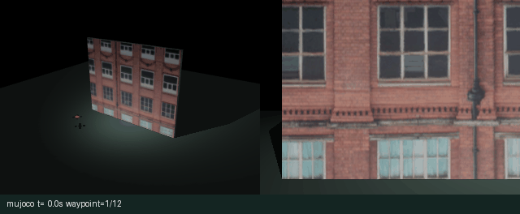
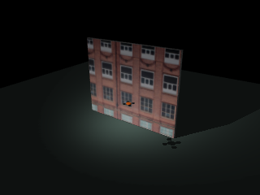
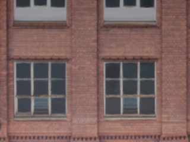
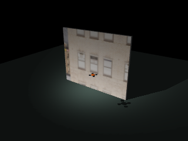
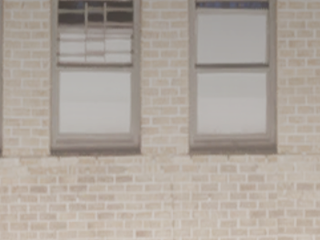
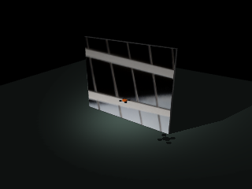
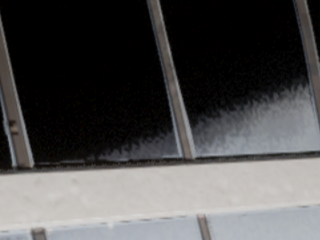
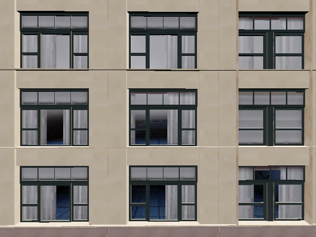
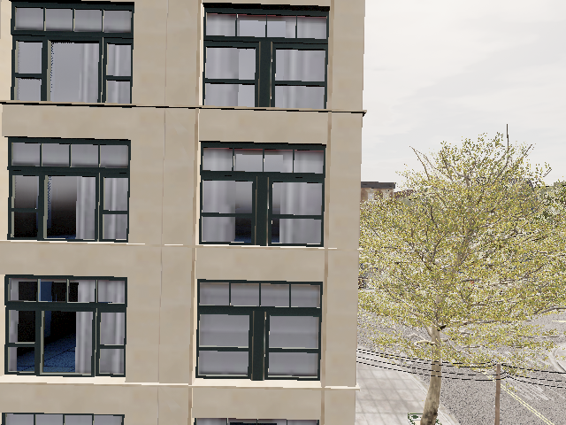

Town10 立面自主巡航与图像采集¶
模块将立面扫描、神经速度控制、图像采集和 ROS 2 消息发布组织为统一任务状态机。MuJoCo 后端运行三个由 Town10HD 图像适配的立面场景；原生 AirSim 后端通过 RPC 读取实际飞行状态、相机图像与前向深度。
OpenHUTB Windows 2.10 的 Town10HD 场景已完成原生在线扫描：12/12航点、12张RGB照片，运行76.500 s。


1. 场景与数据边界¶
MuJoCo 场景包含一面 10 m × 8 m 矩形墙面、地面和三平移自由度飞行器。砖墙、灰墙、玻璃采用补充数据包 airsim_facade_dataset_20261026/dataset_manual/images 内的三张原始 RGB 图片。图像裁剪后统一为 1000 × 800 像素，通过显式 UV 映射覆盖墙面；纹理不重复铺贴，墙前没有遮挡图案的装饰线。
这些图片是 Town10HD 场景采集样本。图像记录中没有逐张配套的原始相机位姿和深度，故本模块只适配平面外观，不据此恢复城市几何、真实尺度或原拍摄外参。新巡航照片的位姿来自本次后端状态，与原始素材的拍摄位姿分开记录。
| 场景 | 总体视角 | 正向相机 |
|---|---|---|
| 砖墙 |  |
 |
| 灰墙 |  |
 |
| 玻璃 |  |
 |
资产的文件名、SHA-256、裁剪框和输出纹理哈希见 资产记录。
2. 路线与控制原理¶
2.1 蛇形路线¶
默认扫描宽 6 m、高 3 m、目标壁距 4 m。相机垂直视场角 50°，宽高比 4:3。垂直视场覆盖高度为：
以 55% 预期重叠率计算横纵采样间隔，并在相邻行反转航点顺序，得到 4 列 × 3 行共 12 点。MuJoCo 世界中墙面位于 y=0，相机朝 +y。原生后端把同一相对路线旋转到启动时的机体右向、前向和向上基向量，并以当前悬停点为第一点，保持平面法向坐标。路线安排不产生向墙前冲的目标航点。
原始 route_town10.txt 包含 36 个 NED 航点。该路线以显式参数选择，支持整体 NED 偏移，保留原来的 270° 朝向。坐标依赖场景出生点与高度定义，不能由图片推算。
2.2 神经速度控制¶
小型 NumPy 网络使用 15 维输入：9 个测距特征、3 个局部航点误差和 3 个局部速度。输入经均值与标准差归一化后，经过 32 单元 ReLU 隐藏层和 3 维线性输出：
随包权重与仓库 mujoco_facade_capture 控制器使用相同的输入定义。训练函数 train_controller 以专家速度指令为标签、Adam 优化均方误差；该纹理适配实验使用固定权重，不把三种外观当作新的独立训练证据。
MuJoCo 的速度内环输出控制力：
物理步长为 0.01 s，默认任务控制周期 0.05 s；每次命令推进 5 个真实积分步，不在运行中直接设置 qpos。姿态稳定为固定姿态假设，因此结果反映平移巡航控制，不涉及旋翼动力分配或姿态机动。
原生后端使用有界神经网络前馈与三轴PD反馈。实际深度与MuJoCo训练场景可能不同，前馈只提供有限修正，位置误差反馈决定近点收敛。对各轴误差 \(e_i\)、局部速度 \(v_i\) 与网络输出 \(v_{NN,i}\)：
当 \(|e_i|<0.035\,m\) 时该轴命令置零。前馈权重随误差趋零，避免网络偏置造成稳态位置偏差；世界速度另受总速度限幅和深度门控约束。真实 DepthPlanar 九点数据进入网络输入，并独立决定近障速度限制。该原生混合控制与MuJoCo神经控制分支分别实现。
2.3 原生深度与安全状态机¶
AirSim 在同一线程串行读取状态、碰撞信息以及相机数据。Scene 与 DepthPlanar 由一次 simGetImages 请求取得，默认最多缓存 0.2 s。深度在画面中央 40%–60% 区域采样 3 × 3 点，保存有效数、最小值、中位数和传感器时间戳。
- 有效值不足 5 个时，任务终止并请求悬停。
- 最小深度低于 1.2 m 时，进入
obstacle_stop。 - 1.2–3.0 m 内，速度按
(d_min-1.2)/1.8缩放。 - 速度指令和状态必须为有限值；碰撞、单航点超时、总时限和退出均执行停止与 API 控制权释放。
服务端可能保留旧碰撞标志，后端连接时记录碰撞时间戳基线，只有更新后的碰撞事件才终止本次任务。初始深度有效性与1.2 m近障阈值单独检查，不依赖碰撞标志。
九点前向采样仅覆盖中央视场，无法保证侧向、上方和相机视场外无障碍。扫描前需核对整个路线空域。
3. 安装与运行¶
源码目录为 src/air/town10_facade_cruise_capture。
python -m pip install -r requirements.txt
python main.py --backend mujoco --style brick --gif --output output/brick
python evaluate_scenarios.py --output output/three_scenes
python -m pytest -q
Ubuntu 无显示渲染环境需安装 libosmesa6、libgl1，并设置 MUJOCO_GL=osmesa。Python 依赖为 NumPy、Pillow、MuJoCo，原生后端额外安装 AirSim 1.8.1。
python -m pip install numpy wheel msgpack-rpc-python
python -m pip install airsim==1.8.1 --no-build-isolation
python main.py --backend airsim --host 127.0.0.1 --camera front_cam --speed 0.5 --duration 150 --gif --output output/native
原生入口默认要求已起飞悬停，--takeoff 显式请求解锁起飞。默认相对路线第一点就是当前悬停点。绝对路线使用：
随包 settings.example.json 配置 front_cam 位于机体前方1.5 m、上方0.2 m，并分别启用Scene和DepthPlanar。该偏移避免机体进入前向画面；DepthPlanar是从相机测得的前向距离，与机体中心到墙的距离有相机外参差异。原生采图清单保留服务端相机位置。
python main.py --backend airsim --camera front_cam --route town10 --route-offset 0 0 0 --speed 0.5 --duration 600 --waypoint-timeout 180 --output output/town10_native
3.1 Town10HD 原生运行起点¶
从 OpenHUTB 2.10.0 发布页 下载并解压 Windows 发行包。在解压目录放置本模块的 settings.example.json，文件名改为 settings.json；配置包含 Drone1、640×480 RGB 相机及 320×240 深度相机。随后在 PowerShell 中启动：
& .\CarlaUE4.exe 'Town10HD?GAME=AIR' -windowed -ResX=960 -ResY=640 -quality-level=Low -nosound
Python 客户端连接 127.0.0.1:41451；Docker 中的 ROS 节点连接 host.docker.internal:41451。客户端可用 listVehicles() 核对载具名称，再执行下方初始化和巡航命令。
已完成的原生实验使用官方Windows 2.10发行的Town10HD场景，载具为Drone1，前向相机为front_cam。一次性设定的NED起点为[29.02,38.91,38.53] m，偏航90.5°；相机相对机体偏移[1.5,0,-0.2] m。在已起飞悬停状态执行：
python prepare_airsim.py --vehicle Drone1 --camera front_cam --position 29.02 38.91 38.53 --yaw 90.5 --camera-offset 1.5 0 -0.2
python main.py --backend airsim --vehicle Drone1 --camera front_cam --speed 0.65 --rate 20 --capture-rate 2 --duration 200 --gif --output output/native
初始化脚本先请求悬停并等待1 s，只在显式传入--position和--yaw时调用一次simSetVehiclePose设置实验起点。它不描述从出生点到起点的飞行过程。巡航入口随后读取实际悬停点作为相对路线原点，仅发送速度指令，不调用位姿写入接口。设置位置后由飞行动力学产生的悬停变化，以采集清单中的实际状态为准；此次清单路线首点为ENU[38.9100,29.0200,-39.9224] m，对应NED高度39.9224 m。
位置设定后，脚本继续检查真实速度，要求连续1 s低于0.2 m/s；最多等待5 s，未稳定则终止初始化。原生航点以位置误差小于0.3 m、速度小于0.35 m/s作为稳定到达条件；MuJoCo沿用0.15 m与0.22 m/s。运行指标中的arrival_position_tolerance_m和arrival_speed_tolerance_m_s记录本次使用的容差。
--takeoff可在初始化时显式执行解锁起飞。该起点仅用于本次Town10HD空域，其他场景应核对坐标和通行空间后再设置。
ROS 2 Humble 工作区构建与启动：
colcon build --packages-select town10_facade_cruise_capture
source install/setup.bash
MUJOCO_GL=osmesa ros2 launch town10_facade_cruise_capture main.launch.py
ros2 launch town10_facade_cruise_capture main.launch.py backend:=airsim host:=host.docker.internal camera:=front_cam speed:=0.5
| 话题 | ROS 类型 | 坐标/数据约定 |
|---|---|---|
/town10/image_raw |
sensor_msgs/Image |
RGB8，默认 2 Hz；相机光学帧 |
/town10/odom |
nav_msgs/Odometry |
ENU 世界位姿，FLU 机体速度 |
/town10/cmd_vel |
geometry_msgs/Twist |
ENU 世界线速度命令 |
/town10/status |
std_msgs/String |
JSON 状态、航点数，末态保留 |
病害识别节点以 /town10/image_raw 为输入即可接入，图像源与病害算法解耦。
4. 运行结果与产物¶
4.1 Town10HD 原生在线结果¶
| 指标 | 实测值 |
|---|---|
| 航点完成数 | 12/12 |
| 航点照片 | 12 |
| 任务时长 | 76.500 s |
| 最大实测速度 | 1.8489 m/s |
| 采图位置最大误差 | 0.2979 m |
| 前方九点深度最小值 | 7.0352 m |
| 九点深度中位数时间均值 | 7.2657 m |
| 当前目标航点误差RMSE | 1.3048 m |
| 当前目标航点最大误差 | 2.1651 m |
全部指标原样保存在原生运行指标，12次采图的实际位姿、目标位姿、传感器时间戳和深度统计保存在原生采图清单。以下两张图为本次原生运行的第1和第12张采集原图：


目标航点切换后，新目标通常距离当前位置约1.5–2 m，随后误差逐渐收敛。因此route_error_rmse_m是全程到当前目标点的误差统计，包含切换瞬间的距离增量，不能作为偏离整条路径的横向误差或悬停精度。实际采图位置误差以清单逐项记录为准。
表中最大实测速度来自服务端实际线速度，包含原生飞控的瞬态响应；它与0.65 m/s的命令限幅分别统计。到达拍摄条件仍要求实际速度小于0.35 m/s、位置误差小于0.3 m。
原生动图展示成功运行中连续采样的前向图像，航点顺序与采图记录一致。
4.2 MuJoCo 纹理场景结果¶
以下结果来自本模块 MuJoCo 三个纹理场景的实际运行。三种场景使用相同几何、物理参数、路线与控制权重，改变的只有照片纹理，因此控制指标一致；这些结果不用于证明未知城市几何或外观变化下的感知泛化能力。
| 场景 | 航点 | 航点照片 | 仿真时长 | 壁距RMSE | 最大速度 |
|---|---|---|---|---|---|
| 砖墙 | 12/12 | 12 | 43.0 s | 0.0020 m | 0.7894 m/s |
| 灰墙 | 12/12 | 12 | 43.0 s | 0.0020 m | 0.7894 m/s |
| 玻璃 | 12/12 | 12 | 43.0 s | 0.0020 m | 0.7894 m/s |
纹理面为避免与碰撞面重叠而置于 y=-0.002 m，九束测距使用可见纹理面的交点；此偏置解释表中的 0.002 m 壁距误差。该指标不包含传感器噪声。
完整数据见 三场景指标 和 砖墙采图位姿清单。动图在任务运行中以 2 Hz 连续取样，展示总体视角与正向相机，不使用人工遥控片段。
运行目录包含：
| 文件 | 内容 |
|---|---|
capture_000.png 等 |
每个稳定到达航点的 RGB 照片 |
manifest.json |
航点、实际位姿、目标位姿、误差与图像传感器时间戳 |
trajectory.csv |
ENU 位置、速度、速度命令、测距、航点编号 |
metrics.json |
后端、状态、完成数、测量来源与性能统计 |
overview.png |
MuJoCo 总体视角 |
cruise.gif |
本次运行连续采样图像 |
原生位姿取自同一串行周期内的飞行状态；图像同时保留传感器时间戳和服务端返回的相机位置，便于检查状态与曝光时刻的差异。原始素材没有位姿的事实不影响新巡航清单的独立记录。
原生指标使用 front_depth_median_mean_m 表示九点深度中位数的时间均值，front_depth_min_m 表示最小实测深度；route_error_rmse_m、route_error_max_m 统计到当前目标航点的误差，capture_position_error_max_m 统计实际采图位置误差。航点切换时目标距离增加，因此全程路线误差不能等同于悬停精度。原生路线保持启动或绝对路线定义的平面位置，4 m只是路线采样和模型的参考参数，不把实测7 m等深度称作4 m定距结果。MuJoCo表格中的壁距RMSE仅属于该平面物理场景。
原生接口测试覆盖坐标变换、真实图像协议、深度有效性、近障停止、非有限命令拒绝以及退出悬停。受控客户端测试只验证接口契约，不作为 Town10HD 原生飞行结果。
5. 源码结构¶
| 文件 | 作用 |
|---|---|
town10_capture/config.py |
参数约束、NED/ENU变换、36点路线解析 |
town10_capture/scene.py |
显式UV墙面、三平移物理模型、相机与九束测距 |
town10_capture/learning.py |
15–32–3网络、权重校验与训练函数 |
town10_capture/route.py |
基于视场角与重叠率生成蛇形航点 |
town10_capture/airsim_backend.py |
单线程RPC、状态/图像/深度读取、近障测量、退出悬停 |
town10_capture/mission.py |
后端共用任务状态机、采图位姿清单、CSV与指标 |
town10_capture/ros_node.py |
ROS2定时调度和四个标准话题 |
launch/main.launch.py |
默认MuJoCo及可选原生主机参数 |
prepare_assets.py |
图像裁剪、尺寸适配和SHA-256记录 |
prepare_airsim.py |
显式一次性设定原生实验起点与相机外参 |
ROS 2 图像联动¶
巡航节点与病害识别节点在 ROS 2 Humble 中同时运行，立面任务完成 12/12 航点。识别节点连续处理 93 帧 320×240 相机图像，发布 BGR 带框图像和检测 JSON，并保留相机坐标系。识别结果中的玻璃构件与病害分别计数。